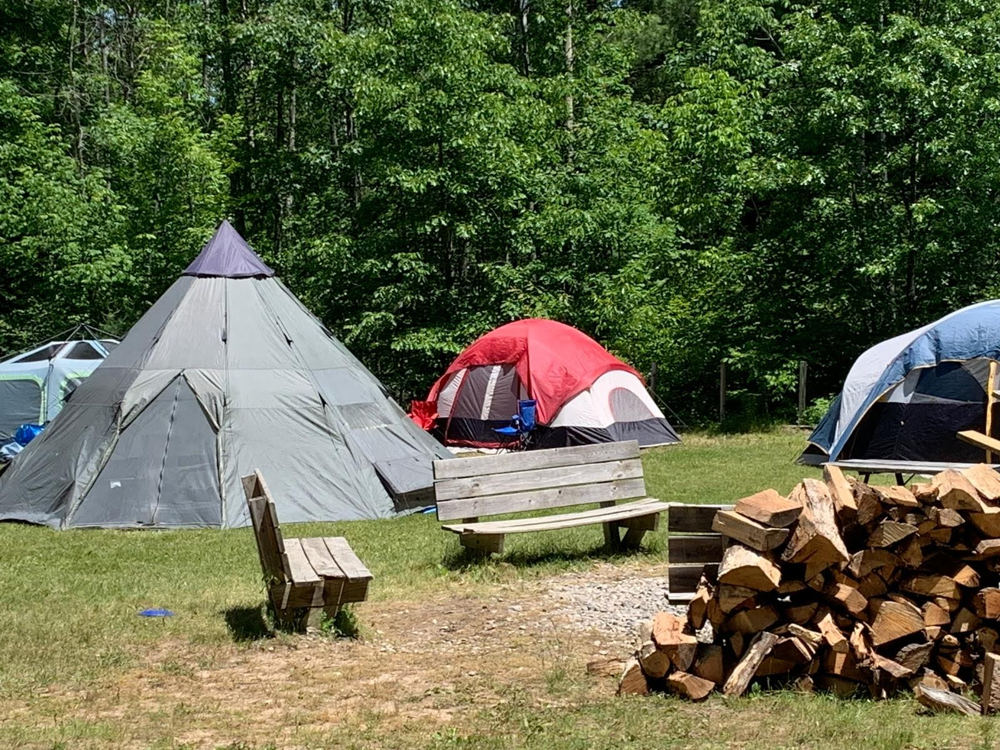
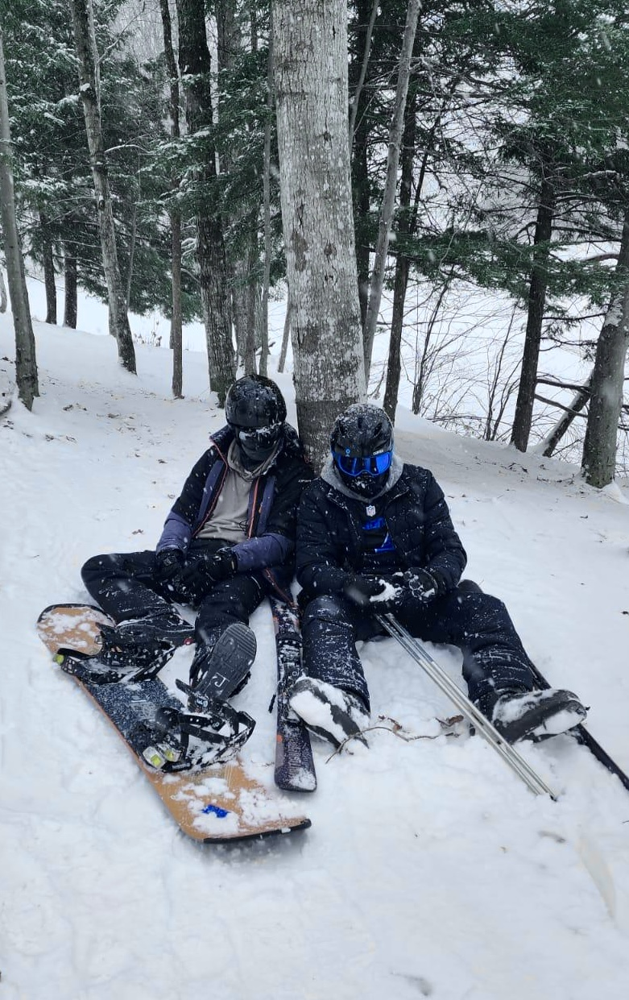
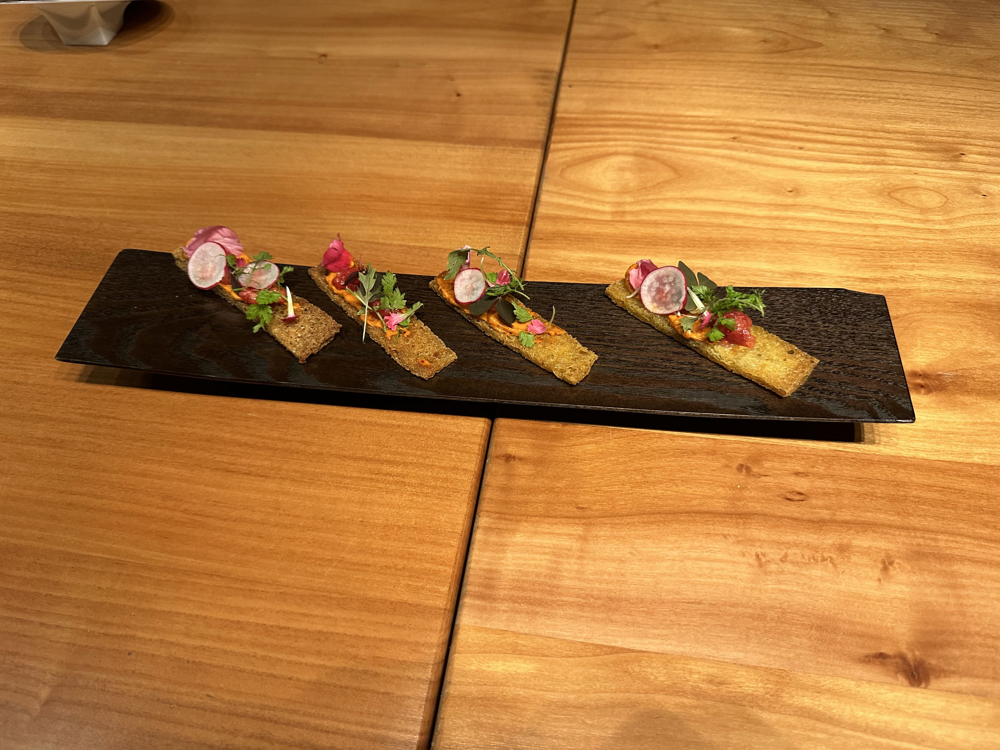
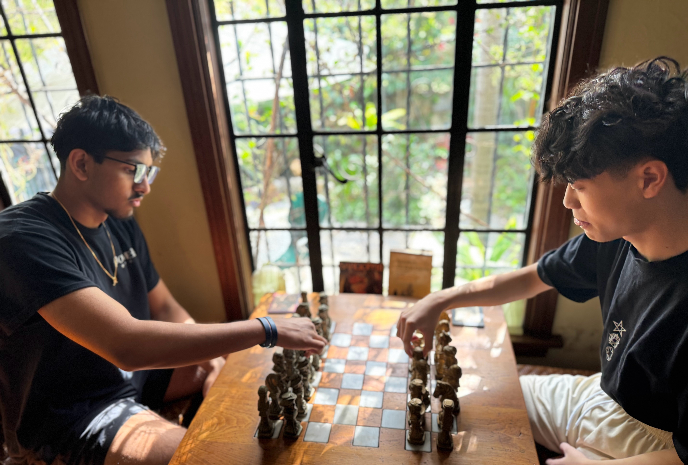
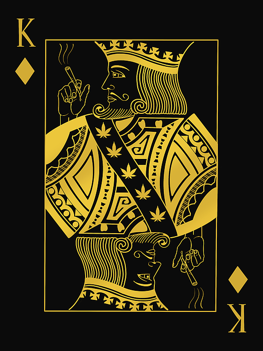
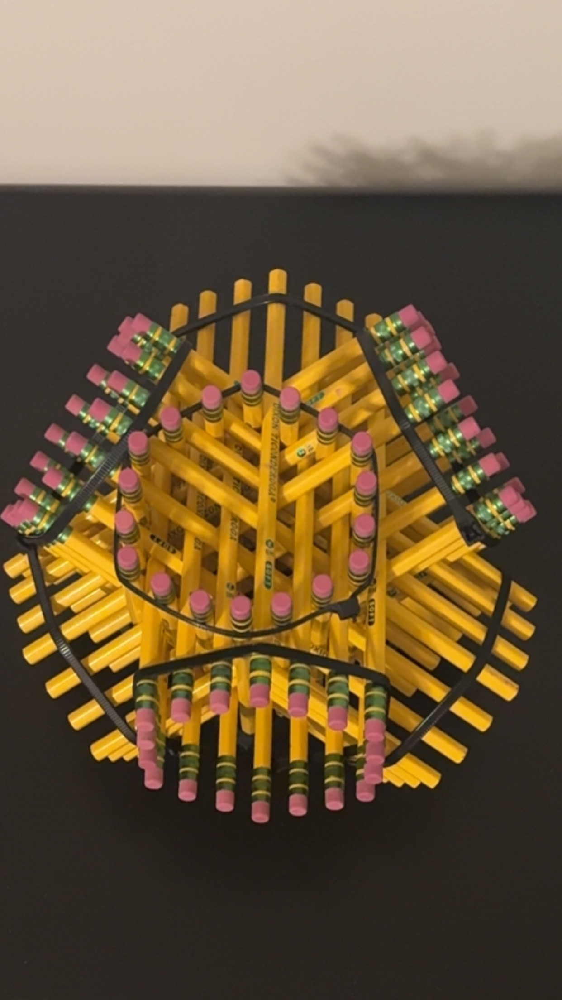

Big fan of movies. Picture of me as Vader as a kid.
I love to read science fiction and anything interesting. Check out my favorite books.

As an Eagle Scout, I love to hike, kayak, and camp.

Pretty much a beginner, but skiing was fun.
I'm a big NJ Devils fan.

I love to travel and try to as much as I can. This is from Hawaii.

Getting better at cooking and exploring making new cuisines.
I've always been a huge Michigan Football fan.
Gym is fun and calm.

Love to play chess with friends.

Love to play casual poker with friends.
Love dogs.

This is a hexastix I made as a kid. Loved making random stuff.